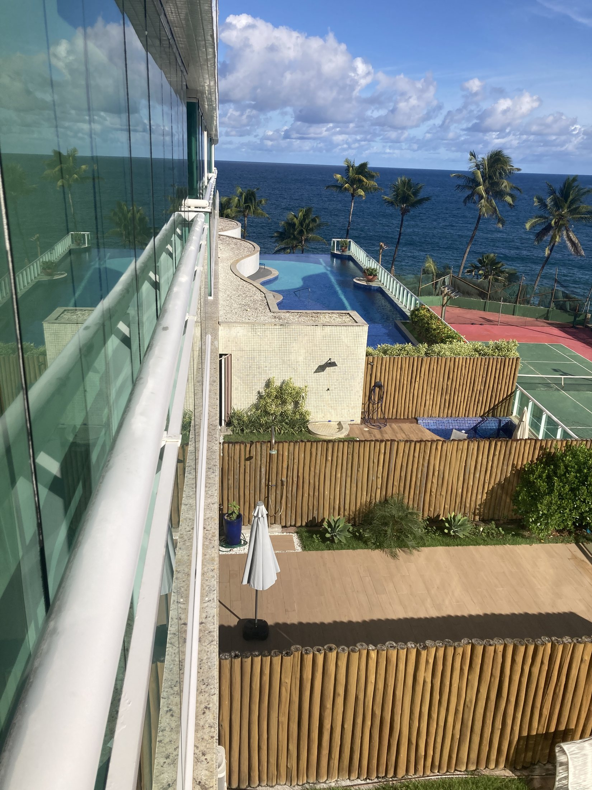

Pedras decorativas da piscina
Estudo pontual de substituição/ajuste de pedras decorativas por tonalidades mais elegantes e menos sensíveis à sujeira aparente.

Situação atual das pedras decorativas.
Clique aqui para ver a imagem maior

Proposta visual com tonalidade mais coerente e sofisticada.
Clique aqui para ver a imagem maior
Pedras decorativas da piscina
A substituição das pedras brancas por tonalidades marrons, terrosas ou levemente avermelhadas pode trazer um equilíbrio estético melhor ao conjunto. A pedra branca, embora pareça limpa no primeiro momento, tende a acusar sujeira com facilidade e pode passar uma aparência de descuido mesmo quando a manutenção está em dia.
As pedras em tons marrons conversam melhor com madeira, vegetação, iluminação quente e materiais naturais. Elas criam uma leitura mais acolhedora e menos fria, reforçando uma estética tropical e residencial.
Esse recurso pode ir além da piscina. Em algumas áreas de passagem, inclusive corredores em andares mais altos que possuem espaços com pedra, essas tonalidades podem trazer mais contraste, alegria e menos monotonia ao olhar de quem circula pelo prédio.
Quando repetida com critério, essa solução pode se tornar uma marca registrada da estética do Costa España: presente na entrada, em áreas externas, em composições de jardim e em pontos de transição. O importante é usar a pedra como detalhe de identidade visual, não como excesso decorativo.